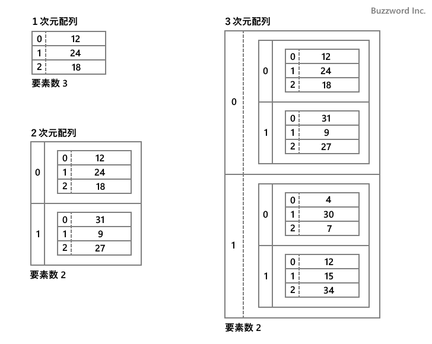
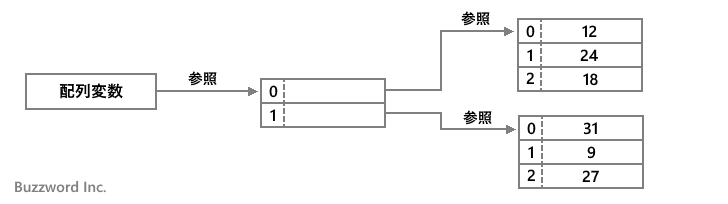
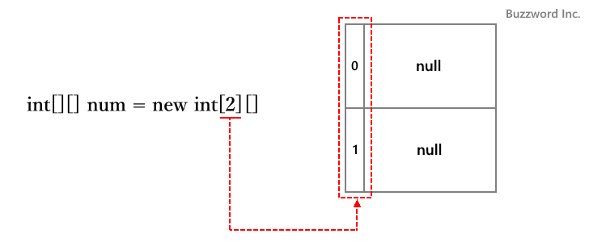
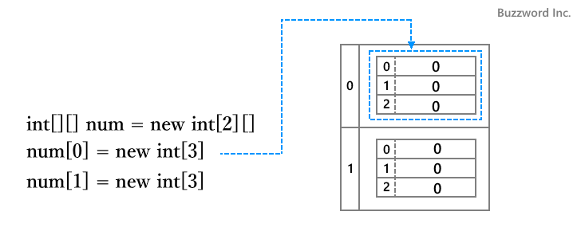
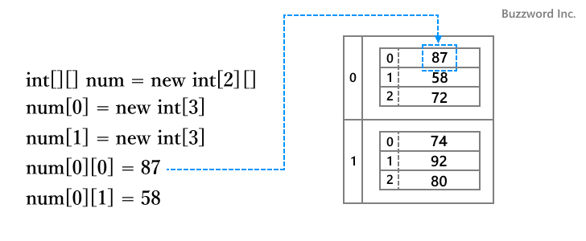
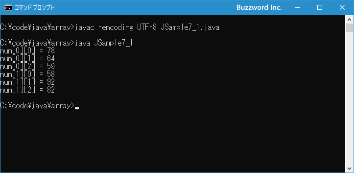
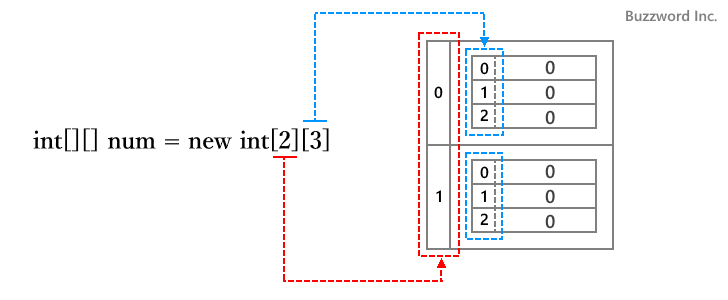
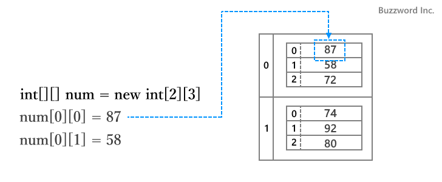

多次元配列を作成する
配列の各要素には基本データ型や参照型のデータを格納することができますが、別の配列オブジェクトをに格納することもできます。正式な名称ではないですが、配列の要素に別の配列が格納されている配列を 2 次元配列、配列の要素に 2 次元配列が格納されているのを 3 次元配列などと呼び、総省して多次元配列と呼びます。ここでは Java で多次元配列を作成する方法について解説します。
多次元配列とは
配列は複数の要素を使って複数の値を管理することができます。配列の要素には数値や文字列の値だけでなく、別の配列を格納することができます。配列の要素に別の配列が格納されているものを 2 次元配列と呼びます。
さらに配列の要素に別の 2 次元配列が格納されているものを 3 次元配列と呼びます。これらを総称して多次元配列と呼びます。同じように配列に入れ子にしていくことでさらに複雑な多次元配列も作成できます。
1 次元配列、 2 次元配列、 3 次元配列をそれぞれ表してみました。 2 次元配列では要素の中に 1 次元配列が格納されており、 3 次元配列では要素の中に 2 次元配列が格納されていることが分かるかと思います。

なお、配列の要素の中に配列を格納した場合、配列オブジェクトそのものが格納されるのではなく別途作成された配列の本体への参照が格納されます。これは変数に配列を代入した場合と同じです。

このあと Java で多次元配列を利用するためにはどのように記述すればいいのかについて解説していきます。
多次元配列を宣言する
それでは例として 2 次元配列を宣言してみます。書式は次のとおりです。
データ型[][] 配列変数名
1 次元の配列と比較して角括弧 [] が余分に付いています。例えば int 型の値を扱う配列であれば次のように宣言します。
int[][] num;
この配列は "int 型の値を要素に格納する配列"を要素に格納する配列、となります。
なお Java では 2 次元の配列の宣言を行うために次の書式も利用できます。
データ型[] 配列変数名[] データ型 配列変数名[][]
いずれでも違いはありませんので、統一してコードを記述してください。このサイトでは最初の書式を利用します。
多次元配列を作成する
配列の宣言が終わりましたら、今度は配列そのものを作成します。 2 次元配列の場合の書式は次のとおりです。
配列変数名 = new データ型[要素数][]
要素数は、別の配列を要素の値として格納する配列の要素数です。
例えば int 型の値を要素に格納する配列を要素に格納する配列で、要素数が 2 の配列を作成するには次のように記述します。
int[][] num; num = new int[2][];
配列の宣言と配列の作成をまとめて次のように記述しても構いません。
int[][] num = new int[2][];

このとき、 num[0] と num[1] はそれぞれ 「int 型の値を要素に格納する配列」を格納する要素です。それぞれの要素に格納する配列はまだ作成されていないので、次のように配列を作成した上で num[0] と num[1] に代入します。
int[][] num = new int[2][]; num[0] = new int[3]; num[1] = new int[3];

num[0] に格納された配列の各要素へアクセスするには num[0][0] 、 num[0][1] 、 num[0][2] で可能です。 num[1] に格納された配列の各要素へアクセスする場合も num[1][0] 、 num[1][1] 、 num[1][2] で可能です。それぞれの要素に対して int 型の値を代入してみます。
int[][] num = new int[2][]; num[0] = new int[3]; num[1] = new int[3]; num[0][0] = 87; num[0][1] = 58; num[0][2] = 72; num[1][0] = 74; num[1][1] = 92; num[1][2] = 80;

これで配列の要素に格納された別の配列の各要素に対して値を設定することができました。
それでは簡単なサンプルプログラムを作って試してみます。テキストエディタで次のように記述したあと、 JSample7-1.java という名前で保存します。
class JSample7_1{
public static void main(String[] args){
int[][] num = new int[2][];
num[0] = new int[3];
num[0][0] = 78;
num[0][1] = 64;
num[0][2] = 59;
num[1] = new int[3];
num[1][0] = 58;
num[1][1] = 92;
num[1][2] = 82;
for (int i = 0; i < 2; i++){
for (int j = 0; j < 3; j++){
System.out.println("num[" + i + "][" + j + "] = " + num[i][j]);
}
}
}
}
コンパイルを行います。
javac -encoding UTF-8 JSample7_1.java
その後で、次のように実行してください。
java JSample7_1

int 型のデータを格納する配列を格納する 2 次元配列を作成し、要素に対してそれぞれ値を格納したあとで、すべての要素の値を順番に参照して画面に表示しました。
要素に格納される配列の要素数が同じ場合
外側の配列の要素に格納される別の配列の各要素がすべて同じ場合、配列を作成するときに次の書式が利用できます。
配列変数名 = new データ型[要素数A][要素数B]
要素数 A は、別の配列を要素の値として格納する外側の配列の要素数です。そして要素数 B は配列に格納される内側の配列の要素数です。
例えば int 型の 3 つの値を要素に格納する配列を要素に格納する配列で、要素数が 2 の配列を作成するには次のように記述します。
int[][] num; num = new int[2][3];

外側の配列の要素に格納された内側の配列まで作成が終わっているので、それぞれの要素に対して int 型の値を代入してみます。
int[][] num = new int[2][3]; num[0][0] = 87; num[0][1] = 58; num[0][2] = 72; num[1][0] = 74; num[1][1] = 92; num[1][2] = 80;

これで配列の要素に格納された別の配列の各要素に対して値を設定することができました。
型推論を使用した多次元配列の宣言
多次元配列の場合も型推論を利用して配列を宣言することができます。(型推論については「変数宣言で型推論を利用する」を参照されてください)。書式は次のとおりです。
var 配列変数名 = new データ型[要素数][]
例えば int 型の値を格納する配列を要素に格納する配列を宣言すると同時に配列を作成する場合は次のように記述することができます。
var num = new int[2][]; num[0] = new int[3]; num[1] = new int[3];
要素に格納される配列の要素数が同じ場合はまとめて次のように記述できます。
var num = new int[2][3];
型推論を使用する場合は、配列の宣言と同時に配列を作成する必要がある点に注意してください
-- --
Java で多次元配列を作成する方法について解説しました。
( Written by Tatsuo Ikura )

著者 / TATSUO IKURA
初心者～中級者の方を対象としたプログラミング方法や開発環境の構築の解説を行うサイトの運営を行っています。